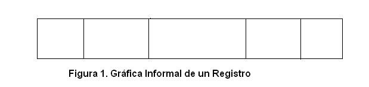
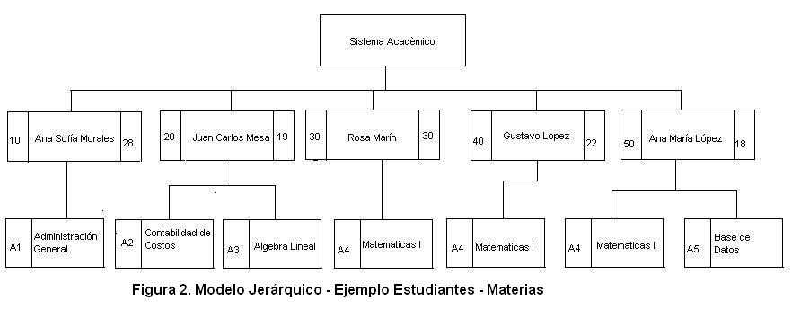
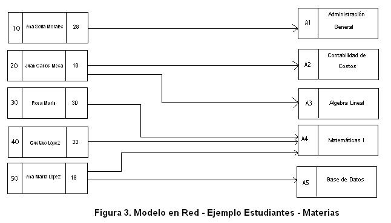
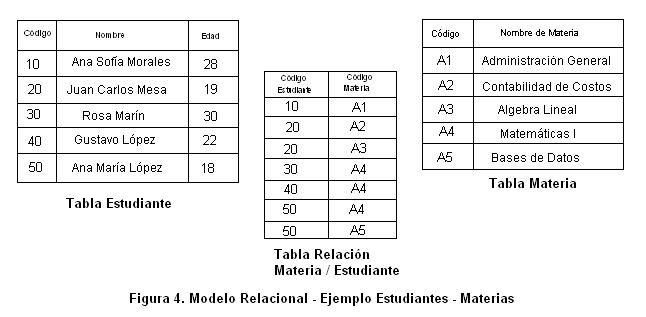

Modelos de Datos y su relación con las Bases de Datos
Hablar de los modelos de datos es hablar de la historia de las bases de datos. Es decir, la explicación puntual de los diferentes modelos de datos que han existido nos da pie para poder explicar, con cierto detalle, como han evolucionado las bases de datos hasta lo que conocemos hoy como bases de datos relacionales.
Antes de entrar a explicar cuál es la relación de los modelos de datos con el mundo de las bases de datos, empecemos por definir el concepto "modelo de datos".
Qué es un modelo de datos?
Podemos empezar diciendo que sinónimos de modelo son patrón, ejemplo, formato, "esqueleto", representación, entre otros sinónimos. Es este último sinónimo el que mejor nos describe lo que es un modelo. Es la representación de algo que se quiere mostrar o ejemplificar.
Pues bien, un modelo de datos no es más que una representación gráfica de 4 elementos que están inmersos en cualquier problema de la vida real que se desee sistematizar informáticamente:
- Los datos a manejar dentro del problema
- Las relaciones entre estos datos.
- La semántica de estos datos, es decir, su significado.
- Las reglas de integridad, si existieran. Es decir, las normas que deben cumplir estos datos para que sean correctos dentro del problema a solucionar.
Se debe recalcar que todo modelo de datos es gráfico, es decir, el resultado final es un dibujo que describe, en el mejor de los casos, los 4 elementos enunciados anteriormente.
Existen múltiples modelos de datos para diferentes finalidades. La siguiente es una categorización estructural de los modelos de datos, desde el punto de vista de su construcción. Existen 3 categorías de modelos de datos:
- Modelos de datos basados en objetos
- Modelos de datos basados en registros
- Modelos de datos físicos.
A continuación detallaremos cada uno de los tipos de modelos, explicando su función y detallando qué modelos de datos específicos corresponden a cada categoría.
Modelos de Datos Basados en Objetos
El término objeto en este contexto no es el mismo del término de la programación orientada a objetos. Acá, en este contexto, no hay que ponerle mucho misterio al asunto.
Todos sabemos que sinónimos de objeto son "cosa", "elemento", "ítem", entre otros. Y es precisamente por eso que estos modelos se llaman así. Su construcción está basada en cosas o elementos concretos tales como rectángulos, rombos, elipses, flechas, cuadrados, líneas punteadas, entre otras cosas, dependiendo del modelo del cual estemos hablando. En otras palabras, el dibujo que resulta de hacer un modelo de esta categoría está conformado por un subconjunto de esos objetos mencionados anteriormente.
Dentro de los modelos basados en objetos, se destacan los siguientes:
- Modelo Entidad / Relación
- Modelo Orientado a Objetos
- Modelo Semántico
- Modelo Funcional
En el ámbito de las bases de datos es muy importante el Modelo Entidad/Relación. Los otros 3 modelos se utilizan en otros contextos. Por eso, a nivel de este manual, nos vamos a concentrar en el primer modelo y para eso nos concentraremos, en el módulo 2, en el tema del Modelo Entidad/Relación.
Modelos de Datos Basados en Registros
Siempre hemos dibujado un registro de la siguiente manera:

Fuente Propia.
Pues bien, los modelos basados en registros se denominan de esa forma porque se dibujan con registros, tal y como se dibujó anteriormente.
Es en esta categorización de los modelos donde podemos abarcar un poco acerca de la historia de las bases de datos y su evolución hasta lo que encontramos hoy con las bases de datos relacionales.
Existen 3 modelos basados en registros y que dan buena cuenta de lo que han sido las bases de datos hasta hoy. Dichos modelos son los siguientes:
- Modelo Jerárquico
- Modelo en Red
- Modelo Relacional
Para poder entender mejor cual es la diferencia entre estos tres modelos y su relación con la historia de las bases de datos, vamos a desarrollar un mismo ejemplo para los 3 modelos.
Cabe anotar que los modelos fueron surgiendo con base en problemas o desventajas que tenían los modelos antecesores. Es decir, el modelo en red nació por la necesidad de solucionar algo del modelo jerárquico; y el modelo relacional, por la necesidad de solucionar una desventaja del modelo en red.
Contextualizando el ejemplo a desarrollar, diremos que vamos a modelar los datos de los estudiantes de una universidad con las materias que está cursando cada estudiante dentro del semestre en curso. Es decir, tenemos dos grandes entes en el ejemplo: ESTUDIANTE y MATERIA.
Modelo Jerárquico
El diagrama siguiente muestra lo que sería el modelo jerárquico para el ejemplo de 5 estudiantes específicos de la universidad.

Fuente Propia.
Por qué se llama modelo jerárquico? Como se puede ver, el modelo está construido en niveles de jerarquía. El esquema con el que se dibuja este modelo es en forma de árbol, es decir, con ramas y hojas. Existe un nodo superior que se denomina nodo raíz y es donde se coloca el nombre de la futura base de datos.
En dicho modelo, un nodo hijo no puede tener más de un nodo padre.
Visualmente es un modelo fácil de analizar. Por ejemplo, si se hiciera la pregunta de cuáles son las materias que está cursando actualmente el estudiante Juan Carlos Mesa, es fácil deducir que son Contabilidad de Costos y Álgebra Lineal. Visualmente es fácil seguir el "camino" de las materias de un estudiante específico.
Pero así como el modelo tiene sus ventajas, también tiene una gran desventaja. Cuál es? Si UNA MATERIA la están cursando varios estudiantes, el cual es un caso muy común, esta materia se debe dibujar tantas veces como estudiantes la cursen. En el ejemplo graficado, se ve que el nodo "Matemáticas I" está dibujado 3 veces ya que dicha materia está siendo cursada por Ana María López, Rosa Marín y Gustavo López.
Por lo tanto, la principal desventaja del modelo jerárquico es que produce REDUNDANCIA DE INFORMACIÓN.
En resumen, las principales características del modelo jerárquico son:
- Se guía por jerarquías entre sus nodos
- Existe un nodo principal llamado nodo raíz.
- Visualmente es fácil de interpretar.
- Un nodo hijo no puede tener más de un nodo padre.
- Puede generar, en muchos casos y dependiendo de la información manejada, redundancia de datos.
Las primeras bases de datos que surgieron fueron las bases de datos jerárquicas y su implementación física se basó en las características principales del modelo jerárquico. Este tipo de bases de datos nació iniciando la década de 1960 a 1970.
Modelo en Red
Para solucionar el problema de la redundancia del modelo jerárquico, surgió el modelo en red. A continuación se presenta el ejemplo de los estudiantes y sus materias, representado por el modelo en red:

Fuente Propia.
Como se puede apreciar, el problema de la redundancia de datos quedó superado con este modelo. A pesar de que la materia "Matemáticas I" está siendo vista por 3 estudiantes diferentes, solo aparece un nodo para dicha materia.
Por qué este modelo se llama modelo en red? Como se puede apreciar en el ejemplo, existe un conjunto de apuntadores que permiten unir a los estudiantes con las materias que está cursando. Estos apuntadores conforman una red (entiéndase como red el cruce "indiscriminado" de apuntadores en el dibujo).
Si notamos bien, en realidad, visualmente es más fácil realizar una consulta en el modelo jerárquico que en el modelo en red, debido a que si esta red de apuntadores crece, es difícil seguirle el rastro a las materias cursadas por un estudiante.
En resumen, el modelo en red tiene las siguientes características:
- La relación entre registros se da con apuntadores.
- Todos los registros tienen la misma jerarquía.
- El manejo de la red de apuntadores es engorroso, si este tiende a crecer.
El tipo de bases de datos que nacieron con la concepción del modelo en red se llamaron bases de datos en red. El auge de este tipo de bases de datos se dio finalizando la década entre 1960 y 1970.
Modelo Relacional
Con el modelo relacional, los problemas de los modelos jerárquicos y en red desaparecen. Se supera el problema de la redundancia de datos y además se suprime el manejo de apuntadores para la relación entre los datos.
El diagrama que se muestra a continuación es una demostración de lo dicho anteriormente.

Fuente Propia.
Como se puede apreciar, cada objeto dentro del problema se esquematiza con una estructura llamada tabla (más adelante se formalizará este concepto). Y lo que es más importante es que la relación entre los diferentes datos está dada por columnas comunes entre las tablas.
Es cierto que a nivel visual es mucho más fácil encontrar la información en el modelo jerárquico, pero el modelo relacional tiene, para su implementación, una profunda concepción matemática que lo vuelve un modelo muy estable.
El modelo relacional no trabaja con apuntadores ni jerarquías. Solamente lo hace con estructuras más simples de manejar como son las tablas, las filas y las columnas de esas tablas.
En resumen, el modelo relacional sugiere:
- El manejo de tablas, filas y columnas
- Supresión de apuntadores, los cuales hacen engorroso la captura y almacenamiento de datos.
- Relacionar los datos a través de columnas o campos en común.
- Una formalización de su manejo a través de una concepción matemática bien fundamentada.
El modelo relacional, en la década de los años 70, dio pie al nacimiento de las bases de datos relacionales, las cuales cumplen con las características anteriormente anotadas.
En este punto de la exposición del tema, no se ha preguntado usted por qué las bases de datos relacionales han persistido tanto en el tiempo, mientras que las bases de datos jerárquicas y en red solo duraron unos pocos años?
La concepción matemática del modelo relacional hace que sus bases sean muy sólidas y formales, lo cual sugiere que cualquier otra metodología de almacenamiento de datos que desee reemplazar al modelo relacional, debe pasar por encima de esta concepción matemática, lo cual es muy difícil. En el módulo referente al modelo relacional, se detallará mucho más en cuáles son los conceptos matemáticos involucrados en él.
Modelos de Datos Físicos
Los modelos de datos físicos son aquellos que permiten esquematizar la implementación física del almacenamiento de datos. Es decir, permite mostrar qué estructuras físicas de almacenamiento de datos se van a utilizar. Es un tipo de modelo muy utilizado por el DBA.
Dentro de los modelos de datos físicos se encuentran los siguientes:
- Modelo de Unificación
- Modelo de Memoria por Marcos.
La descripción detallada de este tipo de modelos escapa del ámbito del tema de este curso.